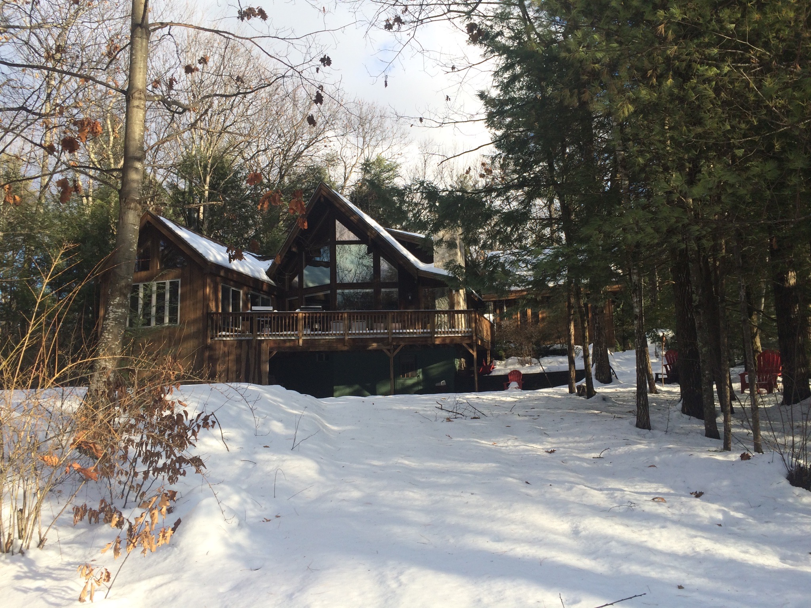
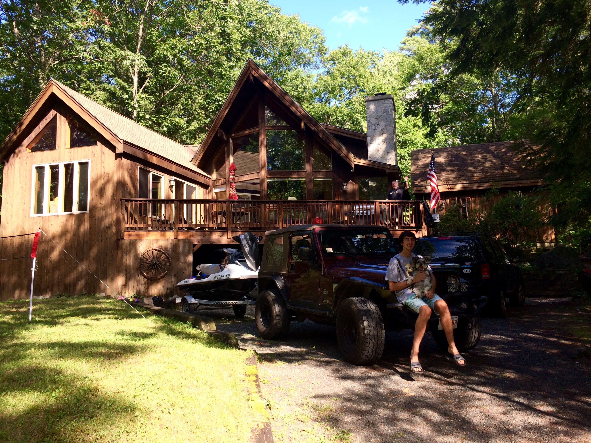
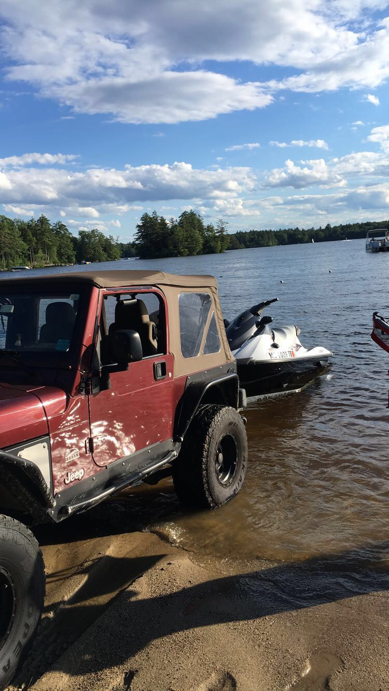
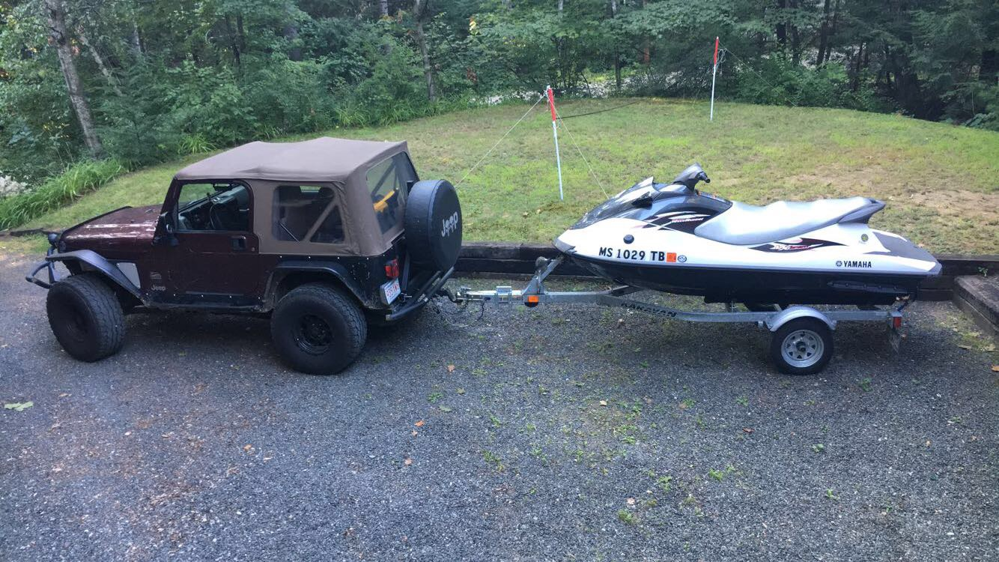
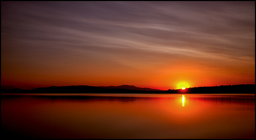
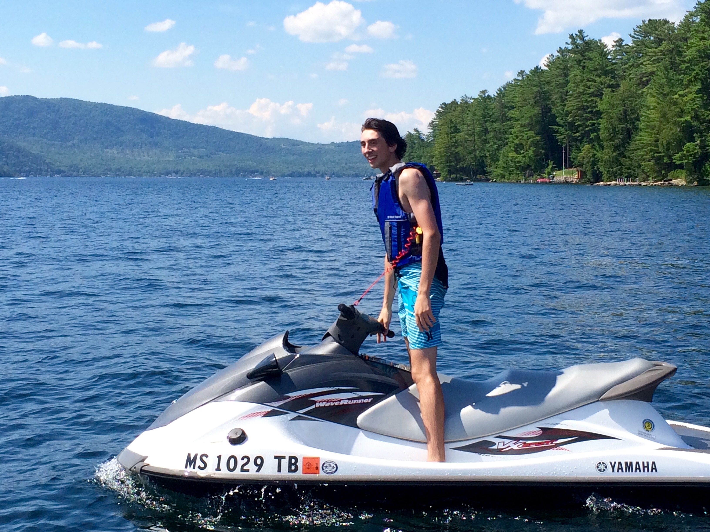

My family bought a house on Lake Winnipesaukee this winter, and we got to enjoy it this winter and summer. I got surgery on my shoulder this winter, so I was not able to be there as much as I had hoped. I go snowboarding a few times a week, and the closest big mountain to the house is about an hour away in Lincoln, New hampshire, called Loon. I am considering buying a snow mobile this winter, and keeping it at the house. There are thousands of miles of trails right behind my house, or I could ride on the lake. Below is a picture of the house in the winter. 
The house is in Moultenborough, New Hampshire. It is a 5 minute walk to the closest beach and boat ramp, or a quick drive to the private beach. The beach we walk to is called States Landing Beach, and residents of the town are allowed to go if they have a parking pass. We also drop the jet ski and boat at this beach, which is convenient because we do not have to drive very far to get to the water or the house. Below are a few photos of the house and the lake.
This is the house in the summer.
 This is me taking the jet ski out to the lake.
This is a sunrise over the lake, taken at Weirs Beach.
This me on the jet ski.